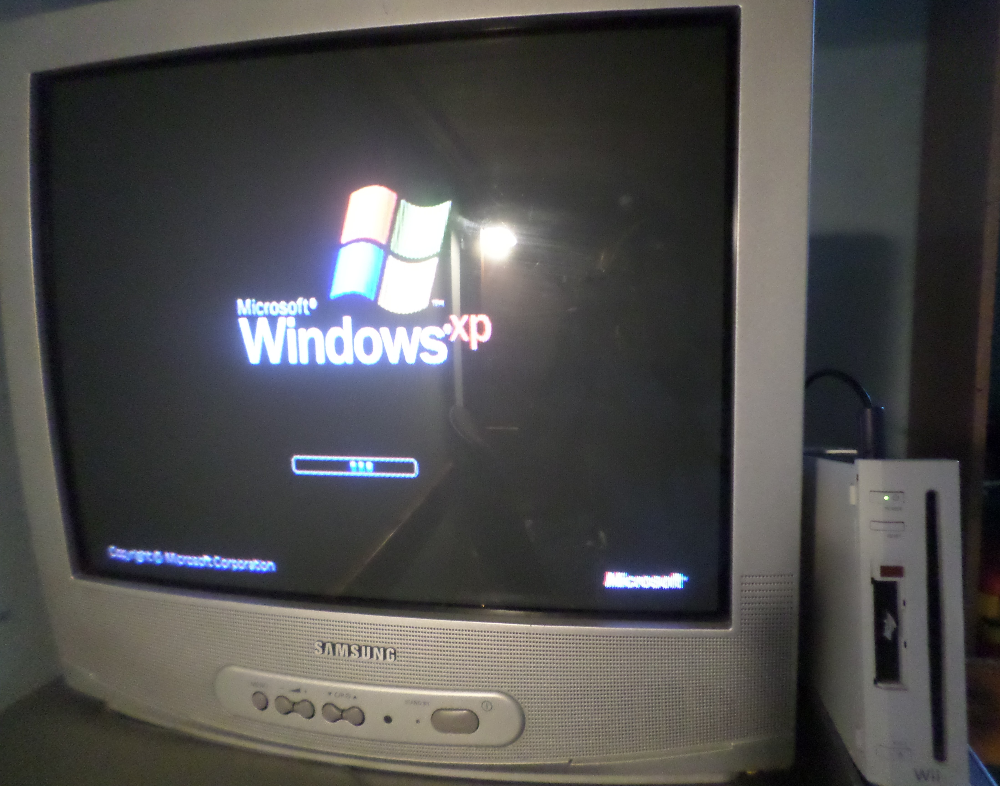
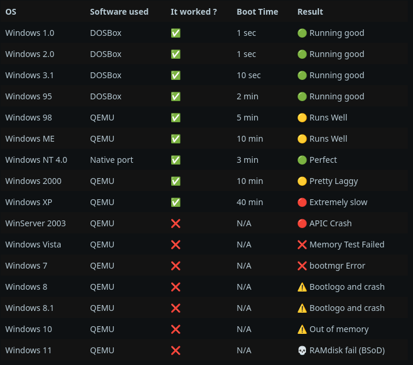
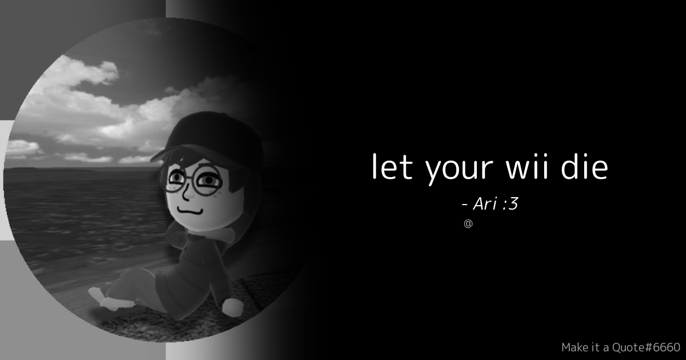
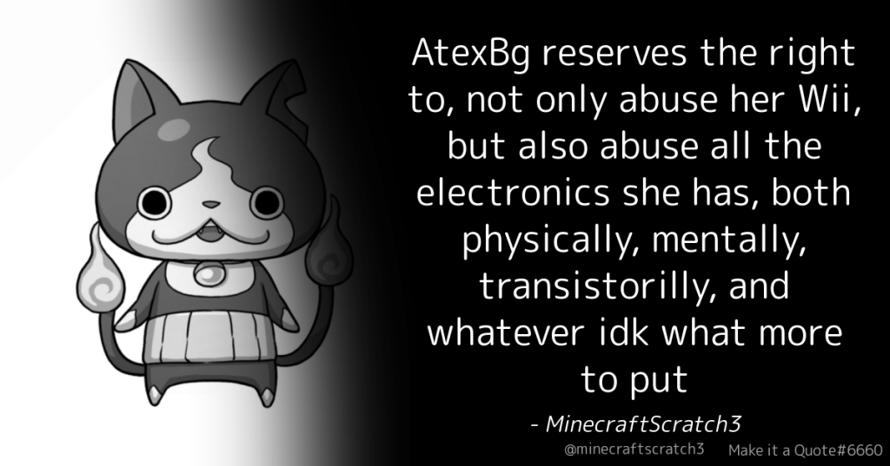
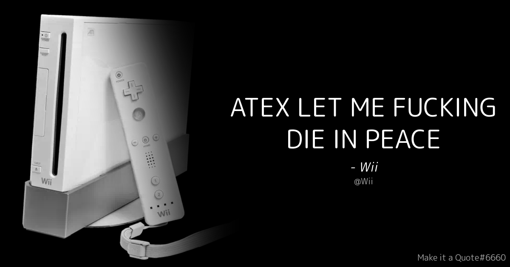

My Wii, she was just a normal Nintendo™ console at first, we got it in 2016 with my brother, spent countless hours playing WiiSports and MarioKartWii on it, and basically everyone in my family played with that specific console unit at least once, until...
...a few years later, i had grew up, nobody was actually playing the Wii anymore, expect me with my nephew when he was coming home sometimes, and also some random weekends when i was trying homebrew stuff on it.
Some time later, i got that Wii and my parent's CRT TV in my room so i was spening hours testing homebrew, playing legally owned games, etc... i was only 13 back then and didn't have that much technical knowledge so i was just enjoying :D
But one day, i heard about Linux on the Wii (not the modern mainline kernel builds, some old Debian 5 port): i started doing random stuff on it, exploring the hardware limitations, and it was pretty limited but i liked it!
I've seen this video of someone actually getting Windows XP running on a Wii all the way back in 2012, so i thought i might push the idea even further...
So i thought
"wait Windows XP can boot on a Wii though a virtual machine, why not trying a more modern version... yknow what fuck it i will try every version of windows :O"

Then i did what i had to do: installed the QEMU virtual machine thing (this being slow asf with the Wii's wifi), launched it (the qemu-system-x86_64 executable to be exact) with a WindowsXP 32-bit ISO, a blank disk image (i dont remember the size lol) and 44 MEGABYTES of RAM allocated (i couldn't do more, 45MB was crashing)... well it worked anyways! :P
It booted to the WinXP setup screen, took ALMOST 40 FUCKING HOURS to install (ofc with this slow SD card, i had to let it run over night, twice!) and then somehow got to the desktop and it took me 30 minutes to just open the task manager lmao
I wanted to try the same process with every version of windows (and some other OSes as you will see in a later section) and if you already looked at my reddit post i previously mentionned you know how it went, so i tried every ISO i had, and here's some of the results:




This is a list of every operating system i actually got booting (and somewhat running!) on my Wii, either through emulation, native port, dosbox, or whatever shi i got on wii